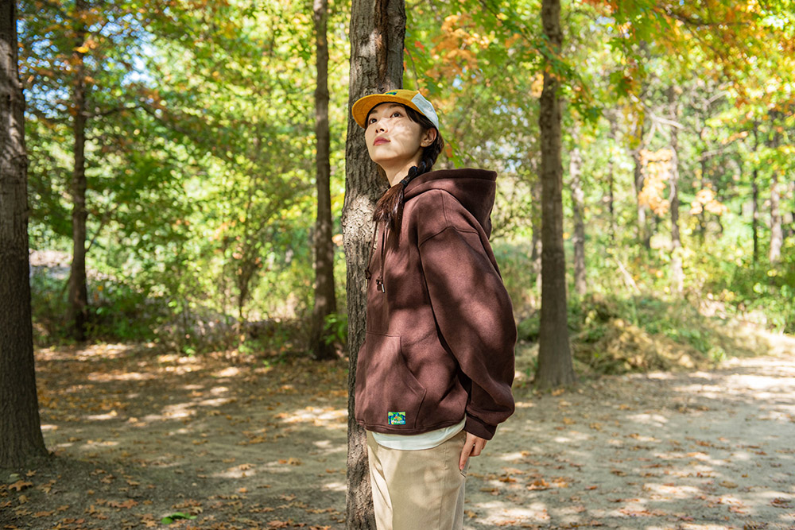

종료까지 D-1 7시간 53분 01초 남았습니다.
펀딩 참여하기
해피빈은 자립준비청년의 모험을 응원합니다.
소이프는 '보육시설 청소년'들이 자신의 이야기를 담아 만든 디자인 결과물을 세상에 선보일 수 있는 기회와 경험을 선물합니다.
OPEN 31 OCT 2024
CLOSE 5 DEC 2024
펀딩 참여하기
해피빈은 자립준비청년의 모험을 응원합니다.
소이프는 '보육시설 청소년'들이 자신의 이야기를 담아 만든 디자인 결과물을 세상에 선보일 수 있는 기회와 경험을 선물합니다.
오직 해피빈에서만 선보이는
특별한 협업
해피빈x소이프
포레스트 캠프 세트 발매
79,000원
"STAND ON YOUR FEET"
자립준비청년들과 숲으로 떠난 모험
